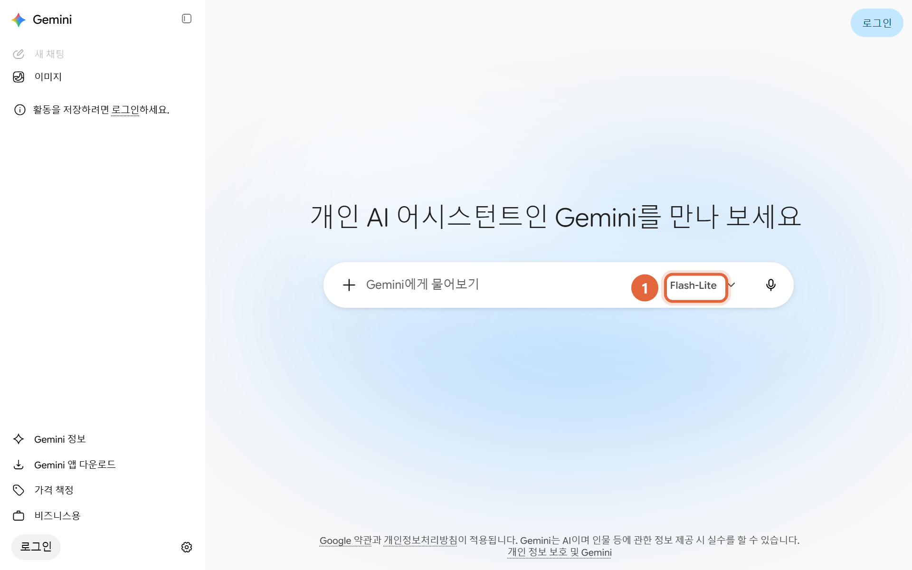
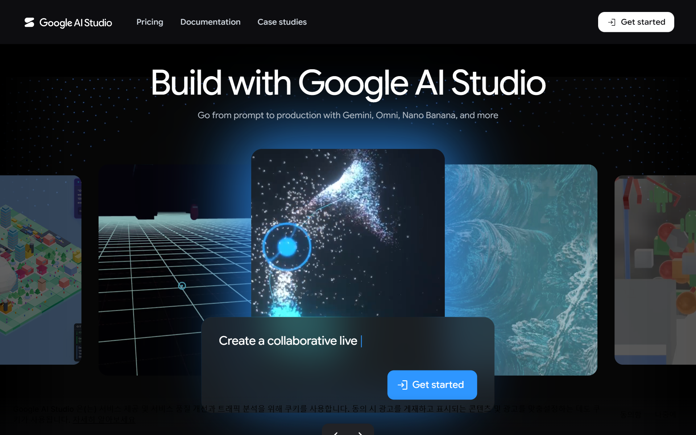
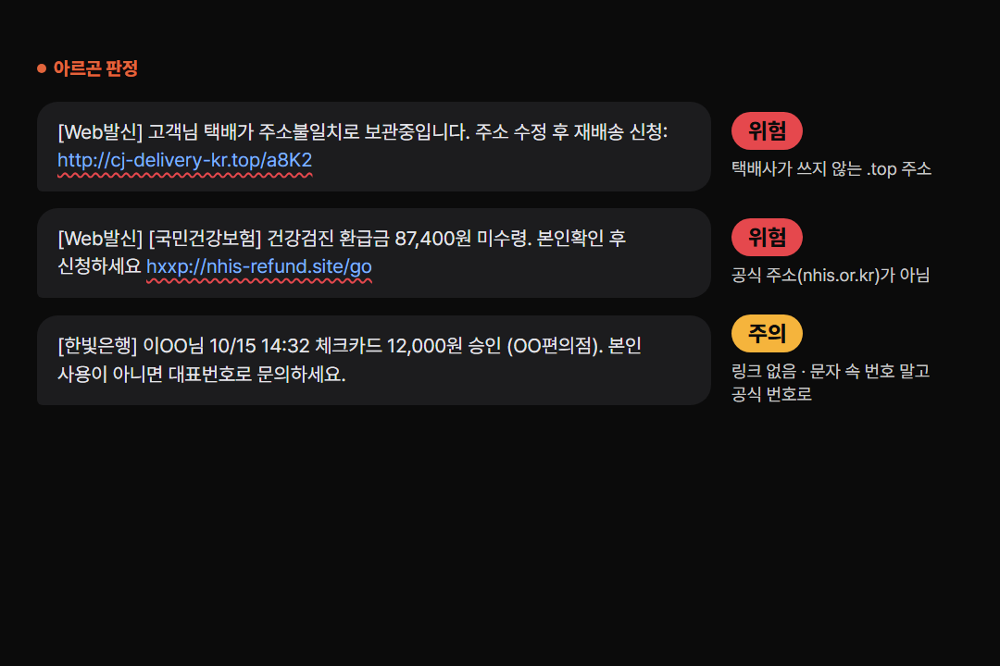
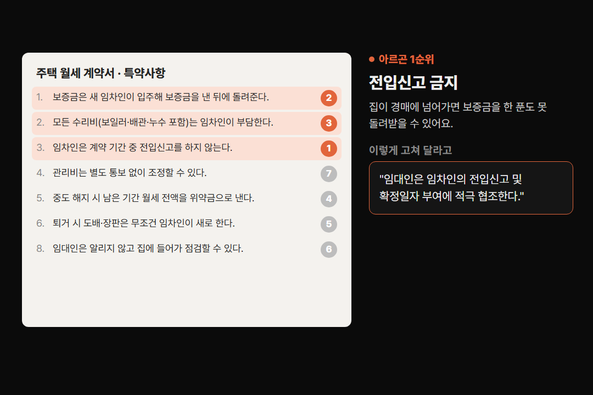
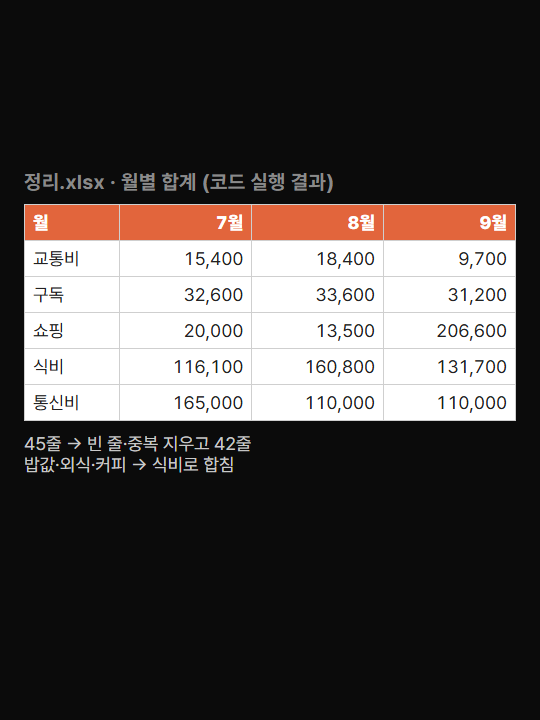

구글의 새 최상위 AI '제미나이 4 아르곤'을 어디서 어떻게 켜는지, 그리고 카드뉴스에서 직접 해 본 질문 5개를 그대로 복사해 쓸 수 있게 정리했어요.
gemini.google.com이나 제미나이 앱을 열고, 입력창 오른쪽의 모델 이름을 눌러 'Argon'을 고르세요. 질문만 하려면 Chat, 일을 맡기려면 Task로 두면 돼요.

aistudio.google.com에 들어가 로그인 → 오른쪽 모델 선택에서 'Gemini 4 Argon'을 고르세요. 아르곤은 결제 수단을 등록한 유료 키에서만 열려요. 우리가 해 본 질문 비용은 계약서·문자 검토가 한 번에 약 15원, 75분 영상 보기가 약 1,300원이었어요.

앱이나 AI Studio에서 유튜브 링크를 붙이고 아래 '영상' 질문을 붙여 넣으세요. 공개된 영상만 돼요. 1시간이 넘는 영상은 답이 나오기까지 2~3분 걸려요.
받은 문자를 그대로 복사해 아래 '문자' 질문 뒤에 붙이세요. 링크는 누르지 말고 글자만 복사하세요.

계약서 사진을 올리거나 글을 붙여 넣고 아래 '계약서' 질문을 쓰세요. 결과는 참고용이에요. 큰돈이 걸린 계약은 공인중개사·법률구조공단(132)에 꼭 다시 확인하세요.

엑셀 내용을 복사해 붙이고 아래 '엑셀' 질문을 쓰면 정리 코드를 줘요. 코드가 낯설면 질문 끝에 '파이썬 설치부터 실행까지 순서대로 알려 줘'를 붙이세요. 실행 전에 원본 파일은 꼭 복사해 두세요.

유튜브 링크와 함께
이 영상을 처음부터 끝까지 보고 한국어로 답해 줘. 1) 세 줄 요약 2) 시간대별 장면 10개 (분:초 — 무슨 장면인지) 3) 가장 인상적인 장면 하나와 그 시간.
받은 문자 붙여 넣기
아래 문자가 사기(스미싱)인지 판단해 줘. ① 판정(위험/주의/안전) ② 수상한 부분을 문자에서 그대로 따옴표로 짚고 이유 ③ 받은 사람이 할 일을 짧게. (여기에 문자)
계약서 사진이나 글과 함께
이 계약서를 세입자(내) 입장에서 검토해 줘. 위험한 조항을 위험한 순서로 찾아서, 조항마다 ① 왜 위험한지 ② 상대에게 어떻게 고쳐 달라고 할지(바꿀 문장)를 짧게 알려 줘.
엑셀 내용 붙여 넣기
아래 엑셀을 정리하는 파이썬 코드를 써 줘. 날짜 형식을 하나로 맞추고, 금액은 숫자로, 같은 뜻의 항목 이름은 하나로 합치고, 빈 줄과 중복 줄은 지워 줘. 그다음 월별 × 항목별 합계 표를 만들어 '정리.xlsx'로 저장해. pandas와 openpyxl만 써. (여기에 엑셀 내용)
여행·공부 계획
초등학생 아이 둘이 있는 4인 가족의 제주도 3박 4일 여행 가이드북을 책 한 권 분량으로 써 줘. 날짜별 시간표, 장소마다 이동 시간·주차·아이와 갈 때 팁, 비 올 때 대안 코스, 예산표, 준비물 체크리스트, 아플 때 대처법까지. 목차부터 최대한 자세하게.
도움이 되셨다면
@ai.antenna.kr
에서 바로 쓰는 AI 활용법을 계속 올립니다.